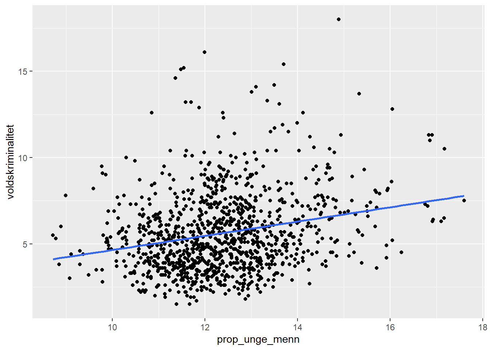
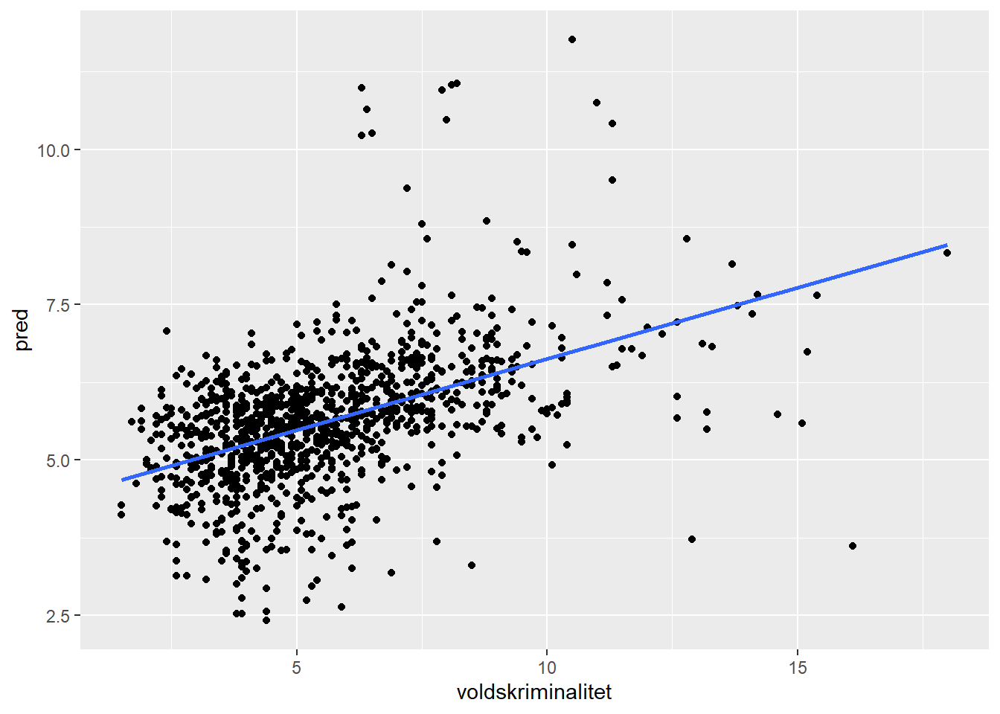
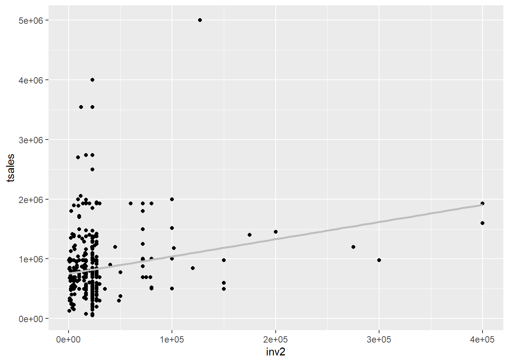
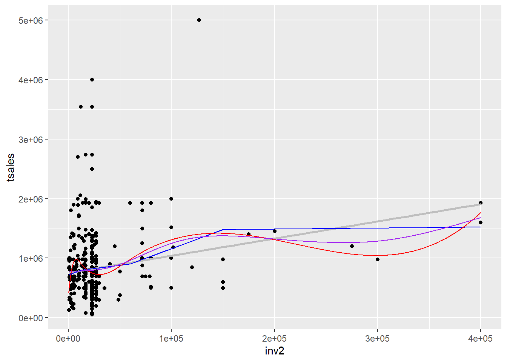
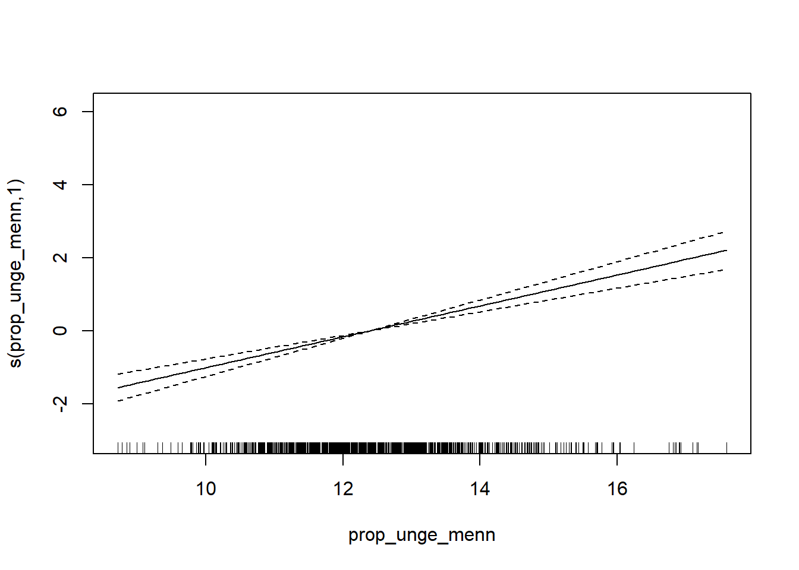

invisible(Sys.setlocale(locale='no_NB.utf8'))
library(tidyverse) # datahåndtering, grafikk og glimpse()
library(rsample) # for å dele data i training og testing
library(splines) # for spline-regresjon
library(Ecdat) # inneholder datasettet Clothing
library(mgcv) # for generaliserte additive modeller (GAM)2 Lineær regresjon
I dette kapittelt skal vi bruke følgende pakker:
Lineær regresjon slik vi skal bruke det her er helt vanlig regresjon slik du har lært om i grunnleggende kurs i kvantitative metoder. Altså lineær funksjon estimert med minste kvadraters metode. Alt du har lært før gjelder også her. Forskjellen er at vi nå ikke er så interessert i å tolke \(\beta\) men i den predikerte \(\hat{y}\).
2.1 Lese inn data
Vi illustrerer lineær regresjon med et empirisk eksempel. Her skal vi bruke data for norske kommuner i 2016. La oss si at vi er interessert i hvordan antall voldshendelser per 1000 innbyggere vil endre seg i en kommune. Dette kunne være relevant for langtidsplanlegging av forebygging, politibemanning, helsetjenester osv. Det kan være et område som er i stor endring slik at befolkningssammensetningen forventes å endre seg og/eller det er endrede lokale økonomiske utsikter.
Først leser vi inn dataene og tar en titt på variabellisten.
kommune <- readRDS( "data/kommunedata.rds")
glimpse(kommune)Rows: 1,529
Columns: 28
$ kommune_nr <chr> "0101", "0101", "0101", "0101", "0104", "0104",…
$ kommune <chr> "Halden (-2019)", "Halden (-2019)", "Halden (-2…
$ year <dbl> 2015, 2016, 2017, 2018, 2015, 2016, 2017, 2018,…
$ bef_18min <int> 3556, 3503, 3505, 3544, 3594, 3652, 3704, 3655,…
$ bef_18_25 <int> 3575, 3585, 3432, 3438, 3405, 3404, 3355, 3370,…
$ bef_26_35 <int> 3728, 3804, 3985, 4035, 4057, 4071, 4124, 4110,…
$ bef_totalt <int> 30328, 30544, 30790, 31037, 31802, 32182, 32407…
$ menn_18_25 <int> 1847, 1865, 1813, 1819, 1789, 1802, 1789, 1810,…
$ menn_26_35 <int> 1880, 1919, 2005, 2062, 2063, 2083, 2113, 2134,…
$ menn_36_67 <int> 7067, 7051, 7085, 7057, 7418, 7453, 7408, 7407,…
$ menn_67plus <int> 2496, 2624, 2697, 2806, 2671, 2777, 2856, 2895,…
$ menn_18min <int> 1880, 1847, 1873, 1876, 1842, 1885, 1919, 1878,…
$ kvinner_18_25 <int> 1728, 1720, 1619, 1619, 1616, 1602, 1566, 1560,…
$ kvinner_26_35 <int> 1848, 1885, 1980, 1973, 1994, 1988, 2011, 1976,…
$ kvinner_36_67 <int> 6880, 6832, 6844, 6848, 7479, 7519, 7537, 7596,…
$ kvinner_67plus <int> 3026, 3145, 3242, 3309, 3178, 3306, 3423, 3555,…
$ kvinner_18min <int> 1676, 1656, 1632, 1668, 1752, 1767, 1785, 1777,…
$ inntekt_totalt_median <int> 555000, 562000, 580000, 591000, 561000, 568000,…
$ inntekt_eskatt_median <int> 451000, 453000, 470000, 480000, 449000, 456000,…
$ ant_husholdninger <int> 13890, 14124, 14281, 14454, 15046, 15132, 15313…
$ shj_klienter <int> 1183, 1137, 1099, 1128, 1155, 1129, 1152, 1137,…
$ shj_unge <int> 262, 247, 248, 242, 267, 263, 238, 222, 307, 28…
$ vinningskriminalitet <dbl> 19.7, 18.7, 16.5, 14.5, 24.5, 21.5, 18.0, 18.0,…
$ voldskriminalitet <dbl> 11.2, 12.6, 12.3, 11.2, 7.8, 8.3, 8.7, 9.7, 6.8…
$ nark_alko_kriminalitet <dbl> 21.0, 21.9, 21.0, 20.3, 12.0, 10.2, 10.9, 10.1,…
$ ordenslovbrudd <dbl> 18.5, 16.5, 14.9, 13.7, 8.9, 9.0, 9.1, 9.2, 8.2…
$ trafikklovbrudd <dbl> 15.5, 16.3, 16.7, 19.2, 7.4, 6.3, 6.9, 8.0, 9.6…
$ andre_lovbrudd <dbl> 25.5, 26.5, 26.1, 25.2, 12.1, 12.2, 11.9, 12.4,…2.1.1 Training og testing data
Vi starter med å dele datasettet i training og testing. Her kan vi bruke pakken ‘rsample’ og funksjonen initial_split() etterfulgt av funksjonene training() og testing(). Forhåndsvalget for splitten er 0.75, så dermed brukes 75% til training og resten til testing. Du kan også legge til argumentet prop = og sette en annen andel, f.eks. 0.7 for 70%.
Merk bruken av set.seed(). For å splitte genererer R tilfeldige tall, og seed styrer hvor den algoritmen starter. Når seed er satt vil du få nøyaktig samme resultatet som gjort her. Dette vil du trenge på eksamen for at sensor skal kunne sjekke resultatene dine, så begynn å bruke det med en gang. Tallet inni parentesen betyr ingenting1 og bare sørger for reproduserbarhet der hvor det er tilfeldige tall involvert.
set.seed(42)
kommune_split <- initial_split(kommune, prop = .7)
kommune_train <- training(kommune_split)
kommune_test <- testing(kommune_split)2.1.2 Enkel lineær regresjon i R
En ganske åpenbar faktor som forklarer forekomsten av vold er andel unge menn i kommunen. Rett og slett fordi dette er den demografiske gruppen som begår mest vold - og kriminalitet generelt, faktisk. Hvis befolkningssammensetningen forventes å bli yngre vil det medføre flere unge menn, og da kan vi kanskje forvente at det blir flere voldshendelser bare av den grunn? Sammenhengen mellom unge menn og voldsrate kan estimeres med helt vanlig lineær regresjon.
En god start på de fleste empiriske analyser er å beskrive sammenhengen med et plot. Her legger vi på en lineær regresjonslinje med geom_smooth() der vi presiserer lineær modell med method = "lm" og lar være å ta med konfidensintervallet se = FALSE.
kommune_train <- kommune_train %>%
mutate(prop_unge_menn = (menn_18_25 + menn_26_35)/bef_totalt*100)
ggplot(kommune_train, aes(x = prop_unge_menn,
y = voldskriminalitet)) +
geom_point() +
geom_smooth(method = "lm", se = FALSE)
Lineær regresjon estimeres med lm() og du kan få en enkel output med bruk av summary().
est <- lm(voldskriminalitet ~ prop_unge_menn, data = kommune_train)
summary(est)
Call:
lm(formula = voldskriminalitet ~ prop_unge_menn, data = kommune_train)
Residuals:
Min 1Q Median 3Q Max
-4.0302 -1.5764 -0.3951 1.1826 11.3367
Coefficients:
Estimate Std. Error t value Pr(>|t|)
(Intercept) 0.50954 0.63482 0.803 0.422
prop_unge_menn 0.41329 0.05097 8.109 1.4e-15 ***
---
Signif. codes: 0 '***' 0.001 '**' 0.01 '*' 0.05 '.' 0.1 ' ' 1
Residual standard error: 2.248 on 1068 degrees of freedom
Multiple R-squared: 0.05799, Adjusted R-squared: 0.05711
F-statistic: 65.75 on 1 and 1068 DF, p-value: 1.395e-15Man kan også hente ut kun \(r^2\) med følgende kode:
summary(est)$r.squared[1] 0.05799176For ordens skyld: I tidligere metodekurs har du kanskje lært å få ut en penere regresjonstabell med f.eks. gtsummary-pakken. (Det finnes andre pakker også som gjør tilsvarende). Hvordan output er formatert spiller ingen rolle. I denne sammenhengen har vi lite bruk for en pen regresjonstabell da \(\beta\) ikke er av primær interesse.
Med andre ord kan voldsraten beskrives som:
\[ \operatorname{\widehat{voldskriminalitet}} = 0.51 + 0.41(\operatorname{prop\_unge\_menn}) \]
Men vi har også sett at \(r^2\) er ganske lav, bare 0.058. Denne koeffisienten kalles også “coefficient of determination” og sier noe om i hvor stor grad modellen fanger opp variasjoenen i dataene. En lav \(r^2\) betyr at modellen i liten grad gjør det. Vi må altså forvente at modellen vil bomme ganske kraftig i sine prediksjoner. Vi kan velge å ta modellen seriøst likevel, men ikke ha for store forventninger for prediksjonene!
Et annet mål på hvor godt modellen treffer er “Root mean square error”, RMSE. Dette kan skrives som:
\[ rmse = \sqrt{ \frac{ \sum{(O_i-P_i)^2} }{N} } \]
der \(O\) er de observerte verdiene og \(P\) er de predikerte verdiene for observasjon \(i\). Merk at \((O_i-P_i)\) er residualene. I R kan vi hente ut residualene fra regresjons-objektet med dollartegnet ...$res etter objektnavnet. Da kan du regne ut RMSE som følger:
rmse <- sqrt(mean(est$res^2))
rmse[1] 2.245685RMSE sier altså omtrentlig hvor mye modellen i gjennomsnitt bommer på de observerte verdiene. 2. Hvorvidt det er presist nok eller ikke vil vel strengt tatt komme an på behovet for presisjon, altså: hva man skal bruke det til.
For å få litt bedre tak på hva RMSE betyr kan vi se på et plot av de predikerte og observerte verdiene. Vi kan predikere vold for hver enkelt kommune basert på denne modellen, som altså er den forventede voldsraten hvis modellen er sann. Funksjonen predict() gir oss hva vi trenger.
kom <- kommune_train %>%
mutate(pred = predict(est))Merk at koden her lagde en kopi av datasettet der vi har alle de opprinnelige variablene pluss en variabel med de predikerte verdiene. Vi kan nå sammenlignet prediksjonene med de observerte utfallene.
ggplot(kom, aes(x = voldskriminalitet, y = pred)) +
geom_point(alpha = .3) +
geom_smooth(method = "lm", se = FALSE)
Hvis prediksjonen hadde vært perfekt ville disse punktene ligget på linja, noe den jo ikke gjør. Modellen bommer altså ganske mye.
Hva hvis vi vil vite forventet voldsrate for en kommune for en gitt andel unge menn? Løsningen er å lage et nytt datasett med de verdiene vi er interessert i og så predikere for dette datasettet med å spesifisere newdata = dt. Her er et eksempel der vi ønsker å vite voldsraten hvis andelen unge menn er 15%.
dt <- data.frame(prop_unge_menn = 15)
p <- predict(est, newdata = dt)
p 1
6.708919 I følge modellen vil altså en kommune der 15% av populasjonen er unge menn ha en 6.709 voldshendelser per 1000 innbyggere. Fra tradisjonell statistikk vet vi jo at det er usikkerhet knyttet til dette estimatet og vi kan også ta det med i beregningen her. Vanligvis vil man estimere med et konfidensintervall, som gjelder hvis man estimerer et gjennomsnitt i en gruppe. Her skal vi derimot predikere for en enkelt kommune, som da har større usikkerhet enn om man estimerer for en enkelt observasjon. Dette kalles prediksjonsintervall og må spesifiseres i koden. Hvis det ikke er gitt vil R gi konfidensintervallet.
p_ki <- predict(est, newdata = dt, interval = "prediction")
p_ki fit lwr upr
1 6.708919 2.288514 11.12932Tolkningen er ellers tilsvarende som for konfidensintervall: vi forventer med “95% sannsynlighet”3 at voldsraten vil være mellom 2.3 og 11.1 per 1000 innbyggere.
2.1.3 Multippel regresjon
Enkel regresjon er nettopp enkel og prediksjonen blir ikke så god. Men vi kan komplisere vesentlig ved å inkludere flere variable og bruke alle triksene man evt. har lært om multippel regresjon tidligere, primært interaksjonsledd, polynomer og transformasjoner osv. (Det er ok om du ikke har lært alt dette tidligere).
I R vil vi da bare legge til flere variabelnavn i formelen. Ellers er det meste likt som for enkel lineær regresjon.
est_m <- lm(voldskriminalitet ~ prop_unge_menn + inntekt_totalt_median + shj_unge +
ant_husholdninger ,
data = kommune_train)
summary(est_m)
Call:
lm(formula = voldskriminalitet ~ prop_unge_menn + inntekt_totalt_median +
shj_unge + ant_husholdninger, data = kommune_train)
Residuals:
Min 1Q Median 3Q Max
-4.6862 -1.3599 -0.2042 1.0689 12.4822
Coefficients:
Estimate Std. Error t value Pr(>|t|)
(Intercept) 7.421e+00 7.333e-01 10.121 < 2e-16 ***
prop_unge_menn 4.177e-01 5.328e-02 7.840 1.09e-14 ***
inntekt_totalt_median -1.099e-05 8.539e-07 -12.871 < 2e-16 ***
shj_unge 4.461e-03 1.016e-03 4.392 1.23e-05 ***
ant_husholdninger -2.163e-05 8.361e-06 -2.587 0.00983 **
---
Signif. codes: 0 '***' 0.001 '**' 0.01 '*' 0.05 '.' 0.1 ' ' 1
Residual standard error: 2.037 on 1065 degrees of freedom
Multiple R-squared: 0.2288, Adjusted R-squared: 0.2259
F-statistic: 79 on 4 and 1065 DF, p-value: < 2.2e-16Merk at \(r^2\) nå har gått betraktelig opp, til ca 0.23. Gitt at vi tolker dette som i hvor stor grad vi kan predikere utfallet fra datasettet, så er det kanskje likevel ikke imponerende høyt: vi vil fremdeles forvente mye feil prediksjon.
Her er et scatterplot av observert mot forventet voldsrater:
kom_pred <- kommune_train %>%
mutate(pred = predict(est_m))
ggplot(kom_pred, aes(x = voldskriminalitet, y = pred)) +
geom_point() +
geom_smooth(method = "lm", se = FALSE)
2.1.4 Sammenligning av modeller med ulik kompleksitet
La oss nå systematisk sammenligne flere modeller med ulik kompleksitet. Vi lager først et datasett med utvalgte variable og bruker formelen voldskriminalitet ~ . for å ta med alle variable.
kom_s <- kommune_train %>%
select(-c(kommune, kommune_nr, ordenslovbrudd,
nark_alko_kriminalitet, trafikklovbrudd, andre_lovbrudd,
prop_unge_menn))
full_mod <- lm(voldskriminalitet ~ . , data = kom_s)
summary(full_mod)
Call:
lm(formula = voldskriminalitet ~ ., data = kom_s)
Residuals:
Min 1Q Median 3Q Max
-3.9650 -1.2333 -0.1813 0.8919 12.2114
Coefficients: (4 not defined because of singularities)
Estimate Std. Error t value Pr(>|t|)
(Intercept) -1.198e+02 9.309e+01 -1.287 0.19851
year 6.234e-02 4.646e-02 1.342 0.17998
bef_18min 3.156e-03 1.839e-03 1.716 0.08637 .
bef_18_25 -1.885e-05 1.513e-03 -0.012 0.99006
bef_26_35 1.180e-03 1.006e-03 1.173 0.24109
bef_totalt -2.272e-03 7.130e-04 -3.187 0.00148 **
menn_18_25 3.698e-03 2.136e-03 1.731 0.08373 .
menn_26_35 -1.481e-03 2.013e-03 -0.736 0.46197
menn_36_67 2.710e-03 9.461e-04 2.865 0.00425 **
menn_67plus 1.654e-03 1.339e-03 1.236 0.21676
menn_18min 2.461e-03 2.875e-03 0.856 0.39223
kvinner_18_25 NA NA NA NA
kvinner_26_35 NA NA NA NA
kvinner_36_67 -1.269e-04 9.021e-04 -0.141 0.88816
kvinner_67plus NA NA NA NA
kvinner_18min NA NA NA NA
inntekt_totalt_median -4.693e-05 7.600e-06 -6.176 9.40e-10 ***
inntekt_eskatt_median 5.580e-05 1.108e-05 5.037 5.55e-07 ***
ant_husholdninger 1.555e-03 3.169e-04 4.908 1.07e-06 ***
shj_klienter 2.170e-03 9.967e-04 2.177 0.02968 *
shj_unge 2.191e-03 3.054e-03 0.718 0.47322
vinningskriminalitet 1.066e-01 1.014e-02 10.513 < 2e-16 ***
---
Signif. codes: 0 '***' 0.001 '**' 0.01 '*' 0.05 '.' 0.1 ' ' 1
Residual standard error: 1.891 on 1052 degrees of freedom
Multiple R-squared: 0.343, Adjusted R-squared: 0.3324
F-statistic: 32.3 on 17 and 1052 DF, p-value: < 2.2e-16\(r^2\) gikk noe opp, til 0.343.
2.1.5 Eksempel på overfitting
Men vi kan gjøre modellen ekstra komplisert ved inkludere alle mulige interaksjonsledd. En åpenbar ulempe med dette er at hver enkelt koeffisent blir svært mye vanskeligere å tolke. Vi fokuserer derfor kun på \(r^2\) og RMSE.
Her bygger vi fire modeller med økende kompleksitet og sammenligner RMSE for training-data:
est1 <- est # enkel modell med bare prop_unge_menn (estimert over)
est2 <- est_m # multippel regresjon (estimert over)
est3 <- lm(voldskriminalitet ~ .^2, data = kom_s) # alle 2-veis interaksjoner
est4 <- lm(voldskriminalitet ~ .^3, data = kom_s) # alle 3-veis interaksjonerRMSE for training-data:
sqrt(mean(est1$res^2))[1] 2.245685sqrt(mean(est2$res^2))[1] 2.031873sqrt(mean(est3$res^2))[1] 1.598957sqrt(mean(est4$res^2))[1] 0.9963221For training-data ser vi altså at RMSE synker for hver modell. Mer kompleksitet gir tilsynelatende bedre tilpassning. Men hva skjer med testing-data?
2.1.6 Predikere for nye data
Nå har vi bare sett på hvordan prediksjonen fungerer på training-datasettet. Vi må sjekke med testing-datasettet. Det lagde vi i begynnelsen, så nå henter vi det frem. I predict() må vi nå angi newdata =. Vi predikerer fra alle fire modellene samtidig og regner ut RMSE for testing-data:
kommune_test <- kommune_test %>%
mutate(prop_unge_menn = (menn_18_25 + menn_26_35)/bef_totalt*100)
kommune_pred <- kommune_test %>%
mutate(pred1 = predict(est1, newdata = .),
pred2 = predict(est2, newdata = .),
pred3 = predict(est3, newdata = .),
pred4 = predict(est4, newdata = .))
rmse_test <- kommune_pred %>%
mutate(res1 = pred1 - voldskriminalitet,
res2 = pred2 - voldskriminalitet,
res3 = pred3 - voldskriminalitet,
res4 = pred4 - voldskriminalitet) %>%
summarise(RMSE_enkel = sqrt(mean(res1^2)),
RMSE_multippel = sqrt(mean(res2^2)),
RMSE_2veis = sqrt(mean(res3^2)),
RMSE_3veis = sqrt(mean(res4^2)))
rmse_test RMSE_enkel RMSE_multippel RMSE_2veis RMSE_3veis
1 2.147951 1.876014 23.41166 7109.869Her ser vi at de mest kompliserte modellene gir dårligere prediksjon på nye data! La oss også plotte predikert mot observert for den mest kompliserte modellen:
ggplot(kommune_pred, aes(x = voldskriminalitet, y = pred4)) +
geom_point(alpha = .3) +
geom_smooth(method = "lm", se = FALSE)
Ser dette rart ut? Det er noen observasjoner som har predikert skyhøy voldsrate! Disse prediksjonene bommer voldsomt.
Sammenlignet er den enklere multippelregresjonsmodellen vesentlig bedre på nye data:
ggplot(kommune_pred, aes(x = voldskriminalitet, y = pred2)) +
geom_point(alpha = .3) +
geom_smooth(method = "lm", se = FALSE)
Dette er en ganske ekstrem variant av overfitting. Ved å formulere en veldig komplisert modell som passer veldig godt til training-dataene kan vi ende opp med en modell som passer veldig, veldig dårlig til nye data. Hvis man skulle utforme f.eks. politikktiltak på grunnlag av en slik prediksjon vil det kunne gå riktig så dårlig.
Det er altså slik at en enklere modell kan passe til nye data langt bedre enn en veldig komplisert modell. Grunnen er overfitting: modellen fanger opp vel så mye tilfeldig støy som det underliggende mønsteret. Støyen vil jo være annerledes i de nye dataene.
2.2 Splines
I modellene over har vi antatt en lineær sammenheng mellom prediktor og utfall. Men hva hvis sammenhengen ikke er lineær? En mulighet er å bruke splines, som er stykkevis definerte funksjoner som kan tilpasse mer fleksible former. Splines er nyttige for prediksjon fordi de kan fange opp ikke-lineære mønstre i dataene uten at vi trenger å spesifisere funksjonsformen på forhånd.
Vi bruker datasettet Clothing fra pakken Ecdat som eksempel. Variabelen tsales er totalt salg og inv2 er investeringer.
data(Clothing)
glimpse(Clothing)Rows: 400
Columns: 13
$ tsales <int> 750000, 1926395, 1250000, 694227, 750000, 400000, 1300000, 495…
$ sales <dbl> 4411.765, 4280.878, 4166.667, 2670.104, 15000.000, 4444.444, 3…
$ margin <dbl> 41, 39, 40, 40, 44, 41, 39, 28, 41, 37, 32, 30, 39, 37, 34, 44…
$ nown <dbl> 1.0000, 2.0000, 1.0000, 1.0000, 2.0000, 2.0000, 1.2228, 2.0000…
$ nfull <dbl> 1.0000, 2.0000, 2.0000, 1.0000, 1.9556, 1.9556, 1.0000, 1.9556…
$ npart <dbl> 1.0000, 3.0000, 2.2222, 1.2833, 1.2833, 1.2833, 3.0000, 1.2833…
$ naux <dbl> 1.5357, 1.5357, 1.4091, 1.3673, 1.3673, 1.3673, 4.0000, 1.3673…
$ hoursw <int> 76, 192, 114, 100, 104, 72, 161, 80, 158, 87, 156, 40, 96, 305…
$ hourspw <dbl> 16.755960, 22.493760, 17.191200, 21.502600, 15.742790, 10.8988…
$ inv1 <dbl> 17166.67, 17166.67, 292857.20, 22207.04, 22207.04, 22207.04, 2…
$ inv2 <dbl> 27177.04, 27177.04, 71570.55, 15000.00, 10000.00, 22859.85, 22…
$ ssize <int> 170, 450, 300, 260, 50, 90, 400, 100, 450, 75, 120, 40, 90, 11…
$ start <dbl> 41, 39, 40, 40, 44, 41, 39, 28, 41, 37, 32, 30, 39, 37, 34, 44…La oss først se på sammenhengen med et scatterplot og en lineær regresjonslinje:
p0 <- ggplot(Clothing, aes(inv2, tsales)) +
geom_point() +
geom_smooth(method = "lm", se = FALSE, col = "gray")
p0
Sammenhengen ser ikke helt lineær ut. Vi kan prøve en piecewise linear spline der vi angir knuter (knots) der funksjonen skifter retning. Funksjonen bs() fra pakken splines brukes til dette.
2.2.1 Piecewise linear spline
Med degree = 1 får vi en stykkevis lineær funksjon, altså rette linjer mellom knutene:
model1 <- lm(tsales ~ bs(inv2, knots = c(12000, 60000, 150000), degree = 1), data = Clothing)
summary(model1)
Call:
lm(formula = tsales ~ bs(inv2, knots = c(12000, 60000, 150000),
degree = 1), data = Clothing)
Residuals:
Min 1Q Median 3Q Max
-983725 -333443 -97927 178664 3670029
Coefficients:
Estimate Std. Error
(Intercept) 717496 84585
bs(inv2, knots = c(12000, 60000, 150000), degree = 1)1 78041 107382
bs(inv2, knots = c(12000, 60000, 150000), degree = 1)2 183187 134824
bs(inv2, knots = c(12000, 60000, 150000), degree = 1)3 761569 242818
bs(inv2, knots = c(12000, 60000, 150000), degree = 1)4 804300 365549
t value Pr(>|t|)
(Intercept) 8.483 4.47e-16 ***
bs(inv2, knots = c(12000, 60000, 150000), degree = 1)1 0.727 0.46780
bs(inv2, knots = c(12000, 60000, 150000), degree = 1)2 1.359 0.17501
bs(inv2, knots = c(12000, 60000, 150000), degree = 1)3 3.136 0.00184 **
bs(inv2, knots = c(12000, 60000, 150000), degree = 1)4 2.200 0.02837 *
---
Signif. codes: 0 '***' 0.001 '**' 0.01 '*' 0.05 '.' 0.1 ' ' 1
Residual standard error: 572000 on 395 degrees of freedom
Multiple R-squared: 0.0486, Adjusted R-squared: 0.03897
F-statistic: 5.044 on 4 and 395 DF, p-value: 0.00056492.2.2 B-spline (kubisk)
Med degree = 3 får vi en glattere, kubisk funksjon:
model2 <- lm(tsales ~ bs(inv2, knots = c(12000, 60000, 150000), degree = 3), data = Clothing)
summary(model2)
Call:
lm(formula = tsales ~ bs(inv2, knots = c(12000, 60000, 150000),
degree = 3), data = Clothing)
Residuals:
Min 1Q Median 3Q Max
-921708 -329164 -125551 223018 3598276
Coefficients:
Estimate Std. Error
(Intercept) 419589 136370
bs(inv2, knots = c(12000, 60000, 150000), degree = 3)1 712180 213810
bs(inv2, knots = c(12000, 60000, 150000), degree = 3)2 63428 140939
bs(inv2, knots = c(12000, 60000, 150000), degree = 3)3 847253 269728
bs(inv2, knots = c(12000, 60000, 150000), degree = 3)4 1308842 707178
bs(inv2, knots = c(12000, 60000, 150000), degree = 3)5 -14067 996832
bs(inv2, knots = c(12000, 60000, 150000), degree = 3)6 1345263 419450
t value Pr(>|t|)
(Intercept) 3.077 0.002238 **
bs(inv2, knots = c(12000, 60000, 150000), degree = 3)1 3.331 0.000948 ***
bs(inv2, knots = c(12000, 60000, 150000), degree = 3)2 0.450 0.652929
bs(inv2, knots = c(12000, 60000, 150000), degree = 3)3 3.141 0.001810 **
bs(inv2, knots = c(12000, 60000, 150000), degree = 3)4 1.851 0.064949 .
bs(inv2, knots = c(12000, 60000, 150000), degree = 3)5 -0.014 0.988748
bs(inv2, knots = c(12000, 60000, 150000), degree = 3)6 3.207 0.001450 **
---
Signif. codes: 0 '***' 0.001 '**' 0.01 '*' 0.05 '.' 0.1 ' ' 1
Residual standard error: 562100 on 393 degrees of freedom
Multiple R-squared: 0.08582, Adjusted R-squared: 0.07186
F-statistic: 6.149 on 6 and 393 DF, p-value: 3.54e-06For å visualisere forskjellen lager vi et datasett med predikerte verdier for begge modellene:
inv2.grid <- data.frame(inv2 = seq(min(Clothing$inv2), max(Clothing$inv2)))
pred1 <- predict(model1, newdata = inv2.grid, se = TRUE, interval = "prediction")$fit %>%
bind_cols(inv2.grid)
pred2 <- predict(model2, newdata = inv2.grid, se = TRUE, interval = "prediction")$fit %>%
bind_cols(inv2.grid)
ggplot(Clothing, aes(inv2, tsales)) +
geom_point() +
geom_smooth(method = "lm", se = FALSE, col = "gray") +
geom_line(data = pred1, aes(y = fit), linewidth = 1, col = "blue") +
geom_line(data = pred2, aes(y = fit), linewidth = 1, col = "red")
Den blå linjen er den stykkevis lineære spline og den røde er den kubiske. Begge tilpasser dataene bedre enn den rette linjen.
2.2.3 GAM med smoothing spline
En enda enklere tilnærming er å bruke gam() fra mgcv-pakken med s() som automatisk velger en god smoothing:
model3 <- gam(tsales ~ s(inv2), data = Clothing)
summary(model3)
Family: gaussian
Link function: identity
Formula:
tsales ~ s(inv2)
Parametric coefficients:
Estimate Std. Error t value Pr(>|t|)
(Intercept) 833584 28433 29.32 <2e-16 ***
---
Signif. codes: 0 '***' 0.001 '**' 0.01 '*' 0.05 '.' 0.1 ' ' 1
Approximate significance of smooth terms:
edf Ref.df F p-value
s(inv2) 3.903 4.748 4.844 0.000409 ***
---
Signif. codes: 0 '***' 0.001 '**' 0.01 '*' 0.05 '.' 0.1 ' ' 1
R-sq.(adj) = 0.0501 Deviance explained = 5.94%
GCV = 3.2739e+11 Scale est. = 3.2338e+11 n = 400pred3 <- inv2.grid %>%
mutate(fit = predict(model3, newdata = inv2.grid))
ggplot(Clothing, aes(inv2, tsales)) +
geom_point() +
geom_smooth(method = "lm", se = FALSE, col = "gray") +
geom_line(data = pred1, aes(y = fit), col = "blue") +
geom_line(data = pred2, aes(y = fit), col = "red") +
geom_line(data = pred3, aes(y = fit), col = "purple")
Den lilla linjen er GAM-modellen. Fordelen med GAM er at du ikke trenger å velge knuter selv – funksjonen finner en god tilpassning automatisk.
2.2.4 GAM med kommunedata
Generaliserte additive modeller er i utgangspunktet som lineær regresjon, men inkluderer en eller flere smoothing-parametre. Disse smoothing-parametrene “lærer” funksjonsformen fra dataene i stedet for å anta en lineær sammenheng. Funksjonen gam() fra pakken mgcv brukes for dette, og s() rundt en variabel angir at den skal ha en fleksibel form.
Her er et eksempel der vi bruker GAM med noen utvalgte variable fra kommunedataene:
gam_mod <- gam(voldskriminalitet ~ s(prop_unge_menn) + s(inntekt_totalt_median) + s(shj_unge),
data = kommune_train)
summary(gam_mod)
Family: gaussian
Link function: identity
Formula:
voldskriminalitet ~ s(prop_unge_menn) + s(inntekt_totalt_median) +
s(shj_unge)
Parametric coefficients:
Estimate Std. Error t value Pr(>|t|)
(Intercept) 5.62673 0.05937 94.77 <2e-16 ***
---
Signif. codes: 0 '***' 0.001 '**' 0.01 '*' 0.05 '.' 0.1 ' ' 1
Approximate significance of smooth terms:
edf Ref.df F p-value
s(prop_unge_menn) 1.000 1.000 68.21 <2e-16 ***
s(inntekt_totalt_median) 5.197 6.339 37.48 <2e-16 ***
s(shj_unge) 4.478 5.462 22.78 <2e-16 ***
---
Signif. codes: 0 '***' 0.001 '**' 0.01 '*' 0.05 '.' 0.1 ' ' 1
R-sq.(adj) = 0.296 Deviance explained = 30.3%
GCV = 3.8136 Scale est. = 3.772 n = 1070Vi kan plotte de estimerte smoothing-funksjonene for å se hvordan sammenhengen ser ut:
plot(gam_mod)


Merk at s() tilpasser en fleksibel kurve til dataene. Fordelen med GAM er at vi ikke trenger å anta en lineær sammenheng. Ulempen er at det er vanskeligere å tolke koeffisientene direkte, men for prediksjon er dette ofte ikke et problem.
2.2.5 Oppsummerende kommentar
Det gjelder generelt at mer kompliserte regresjonsmodeller vil gi tilsynelatende bedre tilpassning til data, enten man måler med \(r^2\) eller RMSE. Man kan riktignok bruke mål på tilpassning som justerer for antall parametre etc (f.eks. justert \(r^2\), AIC eller BIC), som kanskje kan bedre dette noe, men det vil ofte lede til overfitting likevel.
Det er derfor veldig viktig å teste modellen mot nye data – i praksis testing-dataene man lagde til å begynne med. Splines og GAM gir mer fleksible modeller enn vanlig lineær regresjon, men de er langt fra så risikable som f.eks. 3-veis interaksjoner. Man kan godt bruke interaksjonsledd, polynomer, splines og andre verktøy. Men med måte.
Bortsett fra for dem som mener det er svaret på “the Ultimate Question of Life, the Universe, and Everything”↩︎
Denne formuleringen er ganske omtrentlig. RMSE er egentlig kvadratroten av gjennomsnittet til de kvadrerte residualene, som er noe litt annet enn gjennomsnittet av de absolutte verdiene av residualene. Det gir bl.a. litt mer vekt til store residualer enn et vanlig gjennomsnitt.↩︎
Dette er en omtrentelig formulering. Alle sannsynligheter gjelder i det lange løp: altså hvis man gjør undersøkelsen veldig mange ganger.↩︎